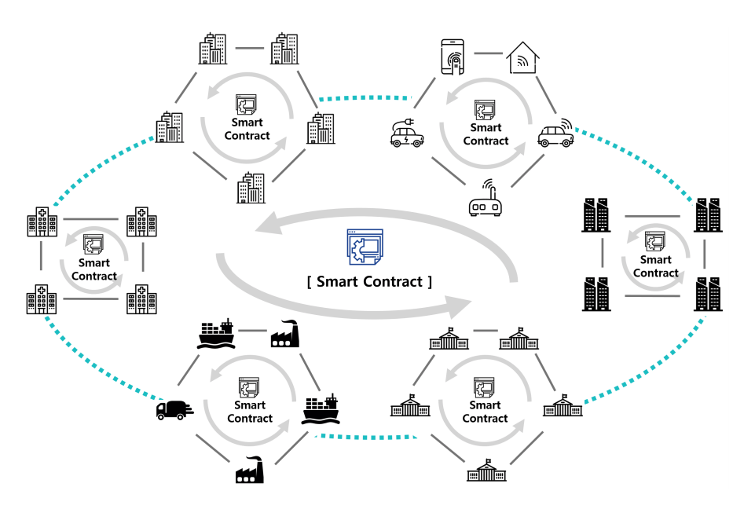

ICON Overview¶
Hyperconnect the World¶
The ICON Project began with the goal to enrich our everyday lives through “connection”. The history of mankind’s technological innovation is related to our history of connection. The creation of postal service made it possible to connect each other's thoughts without having to physically meet each other. Telephones made it possible to connect each other in real-time regardless of the distance, and wireless communication added freedom of mobility. With the advent of the Internet, real-time connection to everything, not just people, has become possible anywhere in the world. Despite these breakthrough, today’s level of connection is still not perfect. With the ICON Project, we are now moving closer to a more seamless connection.
We live in a world where it is possible to buy a cup of latte at Starbucks with one swipe of a credit card. But in fact, there is a more complex process behind the scenes. The information acquired from POS terminal including card number, expiration date, billing address, and CVC are stored in and transmitted to the databases of seven (7) intermediaries such as a front-end processor (FEP) company, and transmitted to pipelines; various fees are incurred at each stage of the process. The credit card network is a centralized system that depends on security and reliability of trusted third parties.
ICON is a decentralized network different from the existing centralized networks. Transactions on the ICON Network are verified by a ledger shared within the community network itself, not controlled by a centralized authority. This minimizes the involvement of unnecessary intermediaries, which significantly reduces the fees. In addition, decentralization ensures autonomy and independence of the community. In order to connect to a centralized system, it is inevitable to passively accept the policies and system determined by the centralized organization. For instance, to use VISA or MasterCard for payment, it is required to use their designated system and follow their policies. However, the ICON Network allows each community to autonomously determine their systems and policies, while reliably connect to other communities when needed.
ICON aims to eradicate various boundaries that have been existed in the centralized system. Imagine stock investors in Korea trading Apple stocks in real-time with US stock investors, or medical researchers at Korean university hospitals obtaining permission to work with diabetes patients’ data from Sydney and London. Cross-border connections will be accelerated through the tokenization of assets and rights, and the dynamics of the network will be maximized. Currencies, tangible assets such as real estates and automobiles, intangible assets such as patents, copyrights, and trademarks, our legal rights such as suffrage and citizenship, and even DNA data or blood tests can benefit from tokenization4. This forces us to rethink everything, even obscures the space-time boundary, and makes distinguishing tangibles from intangibles meaningless. It is possible to trade 0.2 apartments with 0.8 cars, and pay insurance fee directly just by uploading 5 posts on our social media.
ICON brings the connection of humanities one step closer through real-time transactions beyond the boundary and infinite scalability that enables free collaborations.
How to Design¶
The ICON Project is not simply a connection of blockchain nodes, but a deep study or an investigation of community-to-community connectivity. ICON started with the mission to create a protocol, or cryptocurrency, to be actively utilized in the real world within and between actual communities. There were three (3) considerations when designing of the ICON Network:
- Components of the ICON Network
- How to connect
- How to operate We first define the elements that constitute the ICON Network, then investigate the way each element is connected. We also look at how the ICON Network operates with a focus on the effective governance.
Components of the ICON Network¶
Components of the ICON Network: ① Community, ② C-Node (Community Node), ③ CRep(Community Representative), ④ ICON Republic, ⑤ Citizen Node
Community
Community is a network comprised of different nodes with the same governance system. Financial institutions, governments, schools, e-commerce platform, healthcare, Bitcoin, and Ethereum can all be considered a Community. Each community has different compositions and scales of nodes, according to their characteristics and circumstances.
C-Node
C-Node (Community Node) is the building block of a Community that affects the consensus or decisionmaking process of Community governance. C-Nodes are available to both individuals and organizations (banks, brokers, insurers, schools, governments, etc.), and Node policies are determined by the members of each Community.
C-Rep
C-Rep (Community Representative) is a representative unit of Community and a unit that comprises ICON Republic governance at the same time. It has the right to vote on transaction verifications and its governance in ICON Republic. C-Rep is selected according to the decision of each community, and CRep can be changed from one node to another. In other words, C-Reps are subject to change depending on the situation and purpose of each governance. Furthermore, C-Rep will receive incentives for its maintenance and activation of ICON Republic.
Only the node representatives that have highly contributed to ICON Network above a certain level are qualified as C-Reps. A node representative’s contribution to ICON Network is scored by IISS (ICON Incentives Scoring System), the AI (Artificial Intelligence) based scoring system of ICON. The node representatives that maintain I_score(IISS Score) above a minimum requirement for a certain period can acquire the minimum requirements to qualify as a C-Rep. Finally, it will be decided whether the representative Node can be selected as a C-Rep or not through the process of consensus between incumbent C-Reps within Representation Channel. A specific cap of the C-Rep and the minimum requirements for C-Rep qualification both can be modified through the consensus between C-Reps.
ICON Republic
ICON Republic is the connector of different communities. It is comprised of representatives called CRep, and other Citizen Nodes. ICON Republic's governance is determined by votes of C-Rep, and hence, decentralized. ICON Republic functions as a communication channel between communities. ICON Republic does not interfere in the governance of the communities.
Citizen Node
Citizen Node is a component of ICON Republic. Anyone can participate as Citizen Node by DAPPs created on loopchain. However, Citizen Node does not have voting rights for the governance of ICON Republic but has only the right to generate a transaction. Citizen Node can also be a C-Rep with voting rights if certain conditions are met.
How to Connect¶
There are four types of connections in the ICON Network: ① Connection between nodes within a single Community, ② Connection between nodes within ICON Republic, ③ Connection between Community and ICON Republic, ④ Connection between different Communities
Connection between nodes within a single Community
Communities have the freedom choose or customize a blockchain that fit their need. Therefore, each Community such as financial institutions, governments, schools, medical centers, Bitcoin, and Ethereum, can organize themselves into different blockchains and utilize different consensus algorithms.
Connection between nodes within ICON Republic
ICON Republic is supported by loopchain. ICON Republic is designed to connect various communities both in the real world and crypto world. Therefore, it adopted a consensus algorithm that allows processing of real-time transactions. ICON Republic has governance which is different from that of each community, and operates on LFT (Loop Fault Tolerance) consensus algorithm.
Connection between Community and ICON Republic
A Community and ICON Republic are connected in real-time via DEX (Decentralized Exchange). DEX provides exchange ratio in Community and ICON Republic by setting currency reserves and facilitates exchange values in real-time based on that ratio. When it comes to the connection of Community that cannot reach a consensus in real time (e.g. Bitcoin, Ethereum, and Ethereum-based cryptocurrencies), consensus within ICON Republic is suspended until the consensus of the Community is completed.
Connection between different Communities
Connection between different Communities is also available in ICON Republic. ICON Republic is connected to each community in real-time through DEX (Decentralized Exchange), while C-Node is also connected in real-time to other C-Nodes in different Communities via C-Rep and ICON.
How to Operate¶
Community
Each community operates independently based on its own governance according to the characteristics of its own blockchain. Communities can reach its own consensus and make decisions on consensus algorithm, operation of a cryptocurrency, participation of nodes independent to ICON Republic.
ICON Republic
Governance of ICON Republic is determined by the consensus of C-Reps, with the scope of governance limited to ICON Republic. ICON Republic does not interfere in the governance of other communities, but involves in the issuance and rewards policies of ICON Exchange Token ("ICX")
What to Expect¶
A wide variety of communities tailored to each business are formed around the world in various fields such as finance, public service, logistics, healthcare, IoT, energy, manufacture, and E-Commerce. With the development and spread of blockchain technology, these communities are expected to accelerate both in quantity and quality. In such an environment, most tasks will be handled through Smart Contracts within the community, and the role of many centralized agencies and intermediaries in each field will gradually shrink or disappear, accelerating the paradigm shift of business processing.
It is expected that changes to the community-centered work environment will not only affect the way the community works internally, but also fundamentally change the way works are handled between communities. In general, most communities initially begin with the goal of improving the work efficiency among the internal members of the community, but in many cases they evolve naturally in the direction of increasing transactions with the outside world. In this case, rather than handling external affairs through a separate centralized institution, the Smart Contract of each community will become the subject of the transaction and the works will be handled through the connection between the Smart Contracts.
In the megatrends that will result from the spread of blockchain technology, ICON aims to be in the lead by connecting communities to create an environment where all communities in ICON Republic can work in real time based on Smart Contracts.
As the number of communities connected through ICON increases, the transactions in ICON Republic will increase exponentially, resulting in maximum utility of each and every community members connected through ICON.
